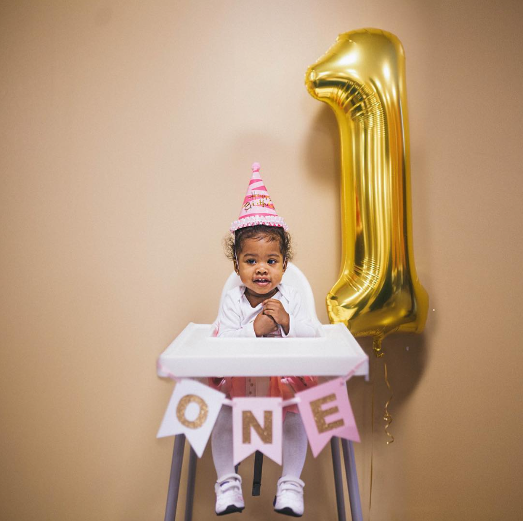
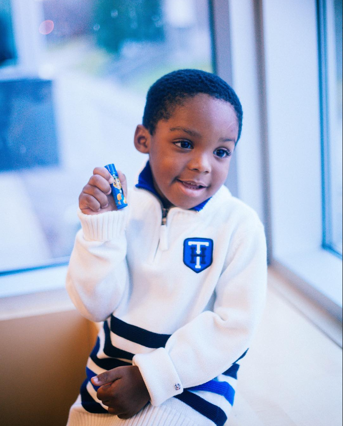
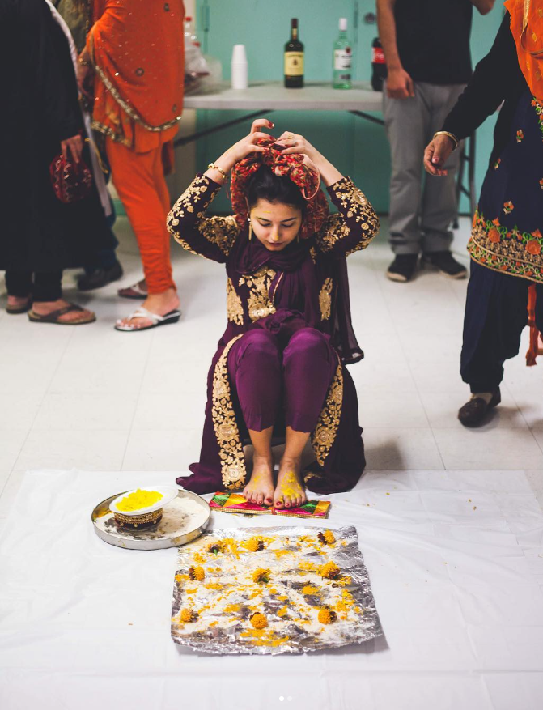
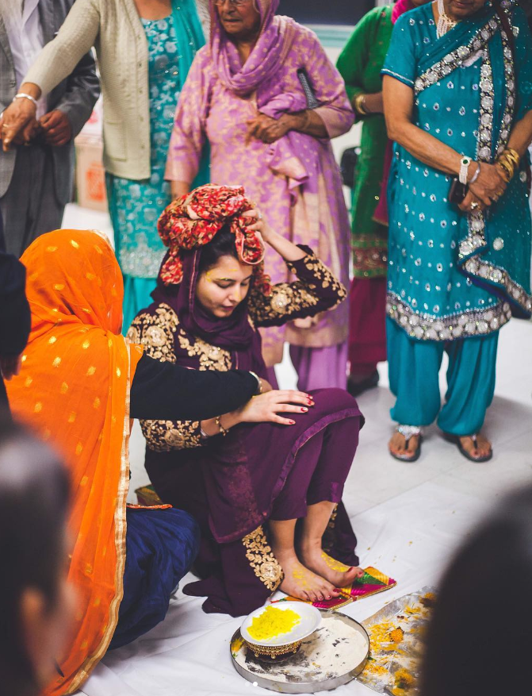
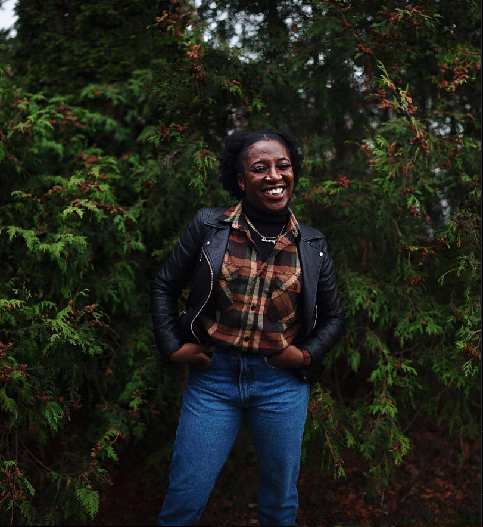
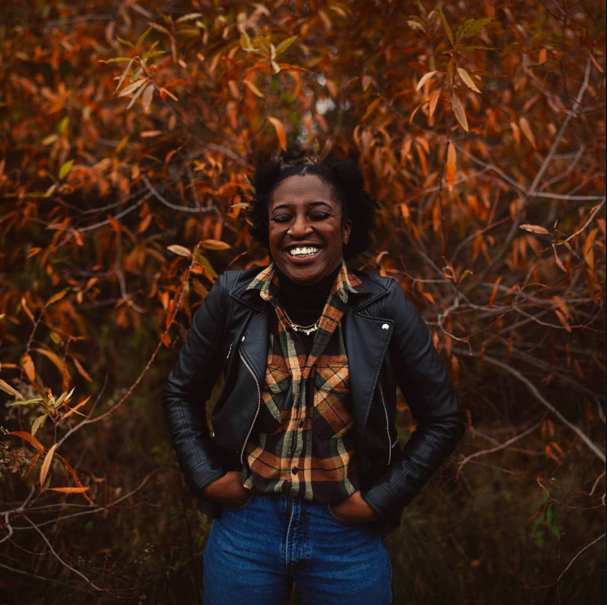

Our photography studio depends on inquiries, and we treat each one with zeal and commitment. Our dedication
to excellence is fueled by your inquiries and requests, whether you're organizing a corporate event, a
family portrait session, a lavish wedding celebration, or a one-of-a-kind creative project. We recognize
that every question is a chance to learn more about your needs, address your vision, and work together to
translate your ideas into reality via our perspective. Our team is here to make sure your experience with us
is easy and pleasurable by giving you all the information you need, responding to any questions you may
have, and guiding you through the process. We would be delighted to speak with you and help you realize your
vision of a breathtaking, unforgettable shot.
Basic Photoshoots
Our basic photoshoots at Abukarra photography provide a personalized and friendly photographic service
that aims to capture the true spirit of people, couples, and families. These meetings serve as evidence
of our dedication to maintaining the beauty of ordinary existence. Whether it's a family portrait, a
romantic engagement session, or a professional headshot, our team specializes in producing classic
pictures that capture the essence of our subjects. With an attention to detail and a love of telling
stories, we make sure that every simple photo session is a unique experience that captures real moments
and real feelings. We're committed to preserving your memories for a lifetime and think that beautiful
photos may be taken in even the most basic surroundings.
Baby/Child Photoshoots
We at Abukarra Photography are experts at preserving the priceless moments that your children
have to offer. Our newborn and kid portrait sessions are intended to capture moments in time and produce
priceless keepsakes that you will always love. Our skilled crew knows how to put your kids at ease and
bring out their true emotions, which makes for endearing and cute pictures that capture the happiness of
childhood.

Wedding Photoshoots
We at Abukarra Photography are experts at preserving the charm of your big day. Every moment
is exquisitely captured in our wedding photoshoots, which combine storytelling, artistry, and
inventiveness. Our commitment is to provide classic photos that will be treasured for many years to
come, making your wedding day genuinely remarkable.

Premium Package Photoshoots
Our Premium Package photoshoots bring together our artistic skills and the splendor of nature. These
photo sessions offer a wonderful chance to record your memorable moments against the magnificent
backdrop of nature. Whether it's a family, engagement, or portrait session, our Premium Package
guarantees a remarkable fusion of nature and craft, producing breathtaking, unique images that honor
your relationship with the surroundings.

If you would like to discuss pricing and packages or would want more information about the kind of
photoshoot you are interested in, please visit our 'Contact Us' page. We are here to assist you in
organizing and personalizing your picture shoot to suit your requirements and tastes.